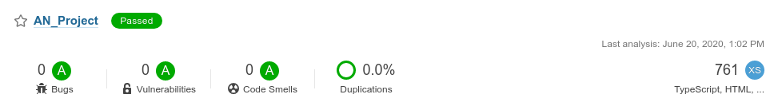

1. Image originale
2. Image niveaux de gris
3. Spectre d'intensité noir
4. Image noir & blanc
5. Erosion/Dilatation
6. Globules blancs (nombre = )
Ce présent projet traite d'une détection de cellules au sein d'une image. Le nombre de globules blancs dans le sang est un indice important de santé pour toutes personnes.
En effet, un surplus de globules blancs peut indiquer :
Et un manque de globules blancs peut indiquer :
Il est donc important de pouvoir compter précisément le nombre de globules blancs d'une personne au sein d'un échantillon. Cela permet d'estimer correctement le nombre de cellules et de définir si la personne est en bonne santé ou non.
Pour un être humain, il est facile mais lent de dénombrer des cellules sur une image. Pour un ordinateur, c'est l'inverse. Il ne reconnaît en rien l'apparence d'une cellule. Un bon algorithme permet à un ordinateur de reconnâitre des cellules (formes). Une fois ce dernier implémenté, le dénombrement sera bien plus rapide qu'un humain grâce à la rapidité d'un ordinateur.
La démarche pour dénombrer les globules blancs sur une image est la suivante :
L'Image Processing est un lien direct avec le chapitre 3, Systèmes linéaires. En effet, beaucoup d'algorithmes utilisent des matrices pour travailler sur des images.
De plus, le calcul pour trouver le seuil limite [min; max] se réfère plus au chapitre 2, Résolution d'Equation.
Si i' est plus grand que la valeur de a, on garde a comme valeur maximale. L'intervalle s obtenu permet de transformer les pixels compris en valeur noir. Les autres seront définis en tant que pixels blanc pour l'image binaire.
Ici, l'image est parcourue avec une fenêtre de taille fixe a. Cette dernière comprend un cercle permettant de tester si l'image dans la fenêtre contient une cellule. A chaque itération, l'algorithme contrôle si la fenêtre contient une cellule (tester les pixels du cercle de la fenêtre avec la matrice cercle créée). Si elle ne contient pas de cercle; la fenêtre est déplacée sur la droite d'un pixel. Si la fenêtre contient une cellule, la fenêtre est décallée sur la droite de la taille de cellule.
En cas de double détections ou plus, un test est effectuée pour ne pas compter à double des cellules. Leur centre doit être espacée de la taille d'une cellule pour que ces dernières soient comptées comme cellules différentes.
Les résultats sont concluants. Ci-dessous se trouve la table des résultats avec les 4 images proposées :
| Image numéro | Taille cellule | Cellules trouvées |
|---|---|---|
| 1 | 23 | 15/15 (cellules entières) |
| 2 | 40 | 15/15 (cellules entières) |
| 3 | 17 | 22/23 (cellules entières) |
| 4 | 25 | 28/29 (cellules entières) |
Le mini projet est scanné à l'aide d'un outil de qualité de code source. Les résultats sont les suivants :
Une documentation type TypeDoc est également générée. Voir la documentation
L'algorithme de détection des cellules fonctionne bien. En somme, la presque totalité des cellules est détectée.
Les faiblesses de la solution proposée sont les suivantes :
Les forces de la solution sont les suivantes :
Les perspectives d'améliorations sont les suivantes :